Show code
data <- tibble(x = 0:10,
y = dbinom(x = x, size = 10, prob = 0.5))
ggplot(data = data, aes(x = x, y = y)) + geom_col() + theme_bw()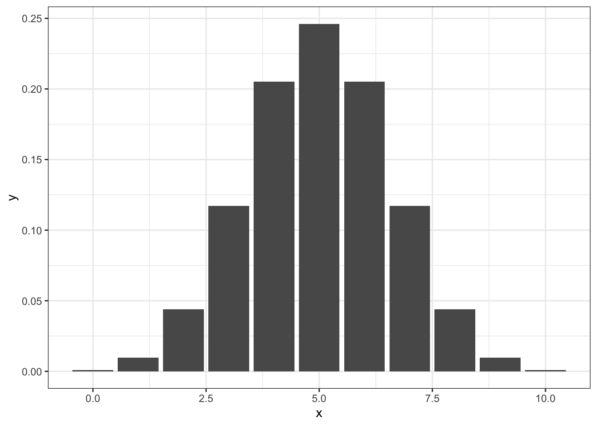
The calculus chapter, Chapter 6, reached the binomial distribution by counting, and closed on the distinction between a probability distribution and the empirical distribution of a data set. A probability distribution is the object that statistical analysis produces and consumes: it lists, for every value the data could take, how probable that value is. This chapter is a working catalogue. It opens with what a distribution is and the several distinct jobs it does — modelling data, encoding a data-generating mechanism, expressing prior knowledge, reporting a posterior — then takes the binomial, normal and log-normal distributions whose data stories Chapter 6 told, adds the Poisson, and adds four more that recur throughout the book — Student’s t, the exponential, the gamma, and the beta. The closing two sections are the point of assembling them together: the distributions are not a list of unrelated formulae but a connected family, most of which share a single mathematical form (the exponential family) that Part V will exploit when fitting generalised linear models.
The aim is not to memorise formulae. For each distribution, the questions to hold in view are: what kind of outcome does it model (a count, a positive amount, a proportion, a real number)? what do its parameters control? and which other distribution is it a special or limiting case of? The R functions follow one naming scheme throughout — d for the density, p for the cumulative probability, q for the quantile (the inverse of p), and r to draw random values — so dnorm/pnorm/qnorm/rnorm for the normal have exact counterparts for every distribution below.
A probability distribution is the full description of uncertainty over a sample space. It is the object that statistical analysis both consumes and produces.
A probability distribution lists, for every member of the sample space, the probability of that member.
The sample space (\(\Omega\)) is the set of mutually exclusive and exhaustive possibilities under consideration — outcomes, or parameter values. For a discrete space the distribution assigns a probability to each member (a mass function); for a continuous space it assigns a probability density, and probabilities are areas under it (the pebble-to-mud move of Chapter 6).
This one mathematical object is put to several distinct practical uses in an analysis, which is a common source of confusion. Four uses recur throughout this book.
Describing variation in a population. The distribution of a measurable quantity across individuals — the systolic blood pressures in a population, the birth weights in a cohort. This is the descriptive use, and the empirical distribution of Chapter 6 — the histogram of a finite sample — is its data-based estimate, which a larger sample brings closer to the distribution it was drawn from. The sample space is the set of values the quantity can take.
Modelling the data-generating mechanism. A distribution can encode the process that produced the data: given the parameters, how probable is each dataset that might have been observed. This is the data story used below — a fixed number of independent yes/no trials produces a binomial, the sum of many small effects a normal. Read as a function of the parameters for the particular data in hand, the same distribution is the likelihood, the engine of inference (Chapter 9 and Chapter 10). The sample space is the set of possible datasets.
Expressing prior knowledge. A distribution can be spread not over possible data but over the possible values of an unknown parameter, or over the members of a hypothesis space (Chapter 8): a beta distribution over an unknown proportion, a normal over a plausible effect size. It grades how plausible each value is before the data are seen — the prior. The sample space is now a set of parameter values.
Reporting the result of inference. The formal output of a Bayesian analysis is itself a distribution: the posterior over the parameter, and the predictive distribution over data not yet observed. This is the sense in which the output of an analysis is not a single number but a whole distribution.
The point to carry forward is that the same family can serve any of these roles. A normal distribution may describe the spread of a trait, the noise in a generating model, a prior over an effect, or a posterior after inference; what changes is what the sample space represents — possible data or possible parameter values — and what the distribution is conditioned on. This is the sample-space / hypothesis-space distinction of Chapter 8 seen from the side of the distributions: a distribution over outcomes is a model of data, a distribution over parameters is a statement of knowledge. Which family to place over which space is a scientific choice, not one the mathematics settles for you.
The catalogue that follows introduces each distribution by its data-generating story — the mechanism that, if it were operating, would give rise to it — because that mechanism is the surest guide to which distribution belongs on a given problem, in whichever of the four roles.
The data story of the binomial is a fixed number \(n\) of independent yes/no trials that each share the same success probability \(p\); the distribution gives the probability of each possible count of successes. Chapter 6 assembled it from counting — \(P_n(k) = \binom{n}{k}p^k(1-p)^{n-k}\) — so this section takes the derivation as given and concentrates on reading a distribution: extracting its expected value, its spread, and interval probabilities. The coin-tossing experiment is the vehicle.
The coin-tossing experiment is the vehicle: toss a fair coin ten times and count the heads. The ten tosses are a Bernoulli process — independent trials, each with the same \(P(\text{heads})\) — so the count follows \(\text{Binomial}(10, 0.5)\), and its sample space is \(\{0, 1, \dots, 10\}\).
data <- tibble(x = 0:10,
y = dbinom(x = x, size = 10, prob = 0.5))
ggplot(data = data, aes(x = x, y = y)) + geom_col() + theme_bw()
The most probable count, \(X = 5\), is the highest bar in Figure 7.1, and the heights compare as ratios: if the probability at one value is twice that at another, the first is twice as likely to occur (both may still be unlikely against the most probable count). Before a single toss is made, the distribution answers four kinds of question.
1. What count should we expect? The expected value \(EX\) is the probability-weighted average of the values — the centre of mass of the distribution, \(EX = \sum x_i p_i\):
(EX <- sum(data$x * data$y))[1] 5For the binomial \(EX = np\). The expected count need not be a possible count: \(np = 5\) here, but \(np\) is in general not a whole number.
\(EX\) is one of three summaries of where a distribution is centred. The mode is the most probable single value; the median is the value with at least half the probability on each side. For a symmetric distribution the three coincide, and for the binomial they coincide whenever \(np\) is an integer; for a right-skewed binomial (\(p < 1/2\)) they order as mode \(\le\) median \(\le\) mean.1 Under the frequency reading of probability \(EX\) is also the long-run average of repeated draws, and the fair price of a gamble that pays the outcome; Chapter 8 takes up what such readings commit one to. The mean is reported more often than the mode or median largely for historical reasons — the confidence intervals and p values of classical statistics were tractable for the mean and not for the others — and modern computation removes that constraint, so the choice should be made on scientific grounds.
2. How spread out is it? The variance is the probability-weighted average squared deviation from \(EX\), \(VX = \sum (x_i - EX)^2 p_i\), and the standard deviation is its square root:
sqrt(sum((data$x - EX)^2 * data$y))[1] 1.581139For the binomial \(VX = np(1 - p)\). For a roughly bell-shaped distribution the range \(EX \pm SD\) covers about two thirds of the probability.
3. What is the probability that the count lies beyond, or within, some values? Sum the probabilities of the counts in question. The probability of 7 or more heads in 10 tosses:
d1 <- data %>% filter(x >= 7)
sum(d1$y)[1] 0.1718754. Which interval of counts carries a given share of the probability? For a distribution over data such an interval is a central interval, or predictive interval: the counts one expects to see with the stated probability. It is not the credible interval for a parameter that Chapter 10 introduces, although the two are computed in the same way. The quartiles of the count are
qbinom(p = c(0.25, 0.75), size = 10, prob = 0.5)[1] 4 6so the counts 4 to 6 form the central interval, and they carry a probability of 0.656 — more than a half, because a discrete distribution cannot usually hit a target probability exactly.
Every distribution in R comes with the same four functions, and the binomial is the place to learn them. dbinom() gives the probability of a count (the d stands for density, the word R uses for mass and density alike): \(P(X = 3)\) for \(X \sim \text{Binomial}(5, 0.2)\) is
\[\texttt{dbinom}(3, 5, 0.2) = \binom{5}{3}(0.2)^3 (0.8)^2 = 0.0512.\]
pbinom() is the cumulative distribution function (CDF), the probability of a count at most the value given:
\[\texttt{pbinom}(3, 5, 0.2) = \sum_{k=0}^{3} \binom{5}{k} (0.2)^k (0.8)^{5-k} = 0.9933.\]
qbinom() is its inverse, the quantile function: given a probability, it returns the smallest count whose cumulative probability reaches it. rbinom() draws random counts. Four worked calls:
dbinom(x = 5, size = 10, prob = 0.5)[1] 0.2460938A probability for a single value is available only in the discrete case; for a continuous outcome the probability of any exact value is zero, as the normal section shows.
dbinom(0, size = 10, prob = 0.5) +
dbinom(1, size = 10, prob = 0.5) +
dbinom(2, size = 10, prob = 0.5)[1] 0.0546875sum(dbinom(0:2, size = 10, prob = 0.5)) # equivalently[1] 0.0546875pbinom(2, size = 10, prob = 0.5, lower.tail = TRUE) # equivalently[1] 0.0546875# lower.tail = FALSE gives the probability of 3 or moreqbinom(p = 0.37, size = 10, prob = 0.5)[1] 4rbinom(n = 5, size = 10, prob = 0.5)[1] 5 2 3 5 7The data story of the Poisson is a count of events in a fixed window of time or space, when the events occur independently and at a constant average rate \(\lambda\): the number of stroke admissions in a month, of mutations along a stretch of DNA, of calls to a helpline in an hour. Mechanically it is a limit of the binomial. If you have a Bernoulli sequence whose number of events (successes) is much smaller than the number of experiments, then the binomial distribution can be converted into the Poisson distribution, which only takes in the number of events. The Poisson distribution is a good data model if
there are many chances for an event to occur, but taken one-by-one they are all unlikely
these events are independent and exchangeable
the frequency of events are constant (the elementary mechanisms generating the events do not change)
two events cannot occur in the same time/place
the probability of an event is proportional to an interval in time or space.
The number n of arrivals of a Poisson process in unit time is Poisson distributed. The single parameter is the rate \(\lambda\) of the arrival of the Poisson process, a positive real number. The Poisson paradigm is also called the law of rare events. The interpretation of “rare” is that the probability of event is small, not that \(\lambda\) is small. For example, the low probability of getting an email from a specific person in a particular hour is offset by the large number of people who could send you an email in that hour.
\(\lambda\) is also the expected value (the number of events), and its standard deviation is defined as \(\sqrt \lambda\). Its formula is
\[f(x) = \exp(- \lambda) \frac{\lambda^x}{x!}\] If deaths arrive at a rate of 5 per week, the probability of exactly 3 deaths in a given week is
exp(-5)*(5^3/factorial(3))[1] 0.1403739or
dpois(3, 5)[1] 0.1403739The distribution is plotted in Figure 7.2.
x <- 0:15
y <- dpois(x, 5)
ggplot(data=NULL, aes(x, y)) + geom_col() + theme_bw()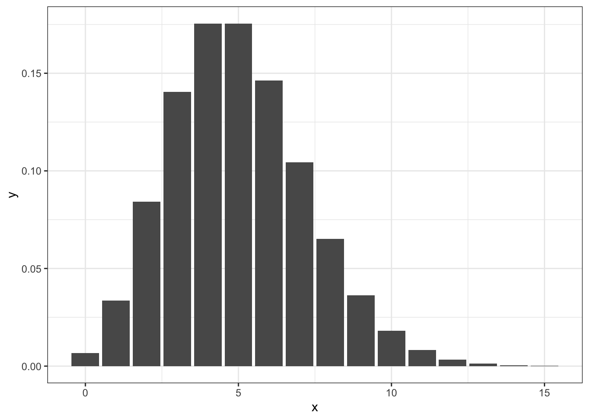
Often biological counts are overdispersed (larger Var than allowed by Poisson). The negative binomial (a.k.a. gamma-Poisson) is a discrete count distribution that arises as a continuous mixture: each count is Poisson given its own rate \(\lambda\), and the rates themselves vary from unit to unit according to a gamma distribution (the gamma section below). In an overdispersion situation we may instead be able to condition the model on X-variables that will convert the outcome into a simple Poisson or binomial distribution, so that the negative binomial likelihood is no longer needed; putting a Poisson likelihood into a multilevel model can sometimes serve the same purpose. Written with a mean \(\lambda\) and a dispersion parameter \(\phi\), \[y \sim NegBinomial(\lambda, \phi)\] the variance is \(Var(X)= \lambda + \lambda^2/\phi\). The dispersion \(\phi\) controls how far the counts spread beyond the Poisson: as \(\phi\) grows the distribution approaches a pure Poisson (whose variance equals its mean \(\lambda\)), while small \(\phi\) produces strong overdispersion. In regression models with a Poisson or negative-binomial likelihood we redefine \(\lambda\) as a linear model with a log link.
For overdispersed binomial distributions we use the beta-binomial likelihood, which assumes that each event has its own realisation probability, so that the distribution describes a spread of probabilities rather than a single probability shared by all events. The beta-binomial has two parameters: \(p\), the mean probability, and a shape parameter \(\theta\) that controls the spread (with \(p = 0.5\), \(\theta = 2\) corresponds to the uniform \(\text{Beta}(1,1)\) — see the beta section below, which lives on the probability scale). Regression models with a beta-binomial likelihood look like this:
\[y \sim BetaBinom(n, p, \theta)\] \[logit(p) = \beta X\]
Other discrete models exist for outcomes whose mechanism the binomial does not fit — the hypergeometric for draws without replacement, the multinomial for more than two categories — but the binomial, the Poisson and their over-dispersed relatives cover the cases this book meets.
The data stories for these distributions were told in Chapter 6: a quantity built by adding many small independent effects tends to the normal, whatever the shape of the individual effects, while a quantity built by multiplying them tends to the log-normal — because the logarithm turns a product into a sum, so the log of the quantity is normal. This section develops both, starting from a simulation of the generating mechanism.
The outcomes so far have been counts. Another common class of outcomes is real numbers, which we call continuous outcomes. The most commonly used probability distribution for modelling continuous outcomes is the normal distribution. For example, if you are running most classical statistical models, like a t-test, principal component analysis, correlation, or linear regression, you are probably using the normal probability model under the hood. This is so mainly for historical computability reasons — the mathematics of the normal distribution is convenient for calculating important statistics with pen and paper. In biology the most useful probability distribution is actually the log-normal distribution.
We start by simulating a process that generates normal or log-normal data.
Let us suppose that 12 separate genes influence a continuous trait, say growth rate, that their effects are independent (the allele status of gene 1 has no influence on how gene 2 affects growth, and so on), and that the effects add. Each organism’s growth rate is then the sum of 12 independent contributions, here drawn at random between 1 and 2.
A single growth rate:
# runif(12, 1, 2) generates 12 random numbers between 1 and 2
sum(runif(12, 1, 2))[1] 18.13817What happens if we simulate 10,000 growth rates (Figure 7.3)?
growth <- replicate(10000, sum(runif(n = 12, min = 1, max = 2)))
ggplot(data = NULL, aes(growth)) +
geom_density() + theme_bw()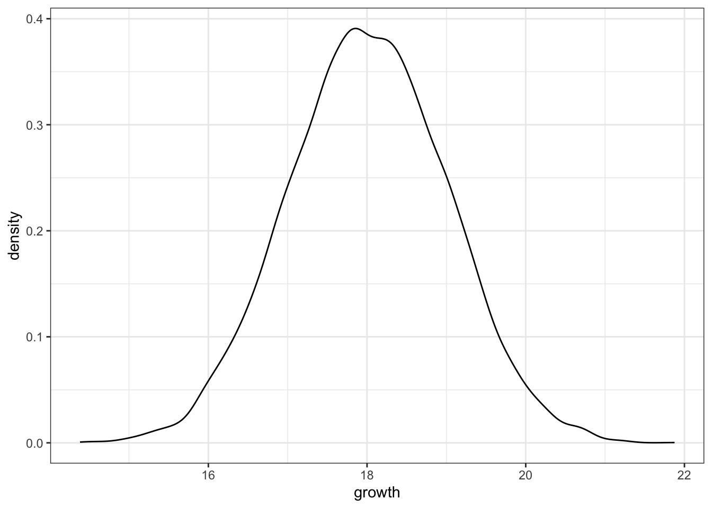
The simulation is an instance of the central limit theorem: if \(X_1, \dots, X_n\) are independent draws from any one distribution with finite mean \(\mu\) and variance \(\sigma^2\), the distribution of their sum approaches \(\text{Normal}(n\mu, \sigma\sqrt{n})\) as \(n\) grows — equivalently, their mean approaches \(\text{Normal}(\mu, \sigma/\sqrt{n})\) — whatever the shape of the parent distribution. Twelve uniform draws already give a bell. How many terms are needed depends on how skewed the parent is; no fixed sample size such as 30 is part of the theorem, and Appendix G shows a skewed parent needing far more. This is why measurement errors, and quantities built from many additive influences, are so often approximately normal, and why the normal is the limit of so many of the distributions below.
This is close enough to a normal distribution. Let us model these data through an actual normal distribution. The parameter, which determines the exact shape of a binomial distribution, is probability of success (p). Similarly, the exact shape of the normal distribution is determined by two parameters, the \(\mu\), which determines the location of the peak, and the \(\sigma\), which determines the scale of the distribution (roughly speaking, the width of the thing).2 We calculate these parameters directly from the simulated data, as is done by most classical statistical techniques. By fixing the values of \(\mu\) and \(\sigma\) we have fitted the model. The modelled distribution in Figure 7.4 is very close to the data, which means that it is now easy to simulate new data from the normal model and, generally, to study the model as a stand-in for the physical world.
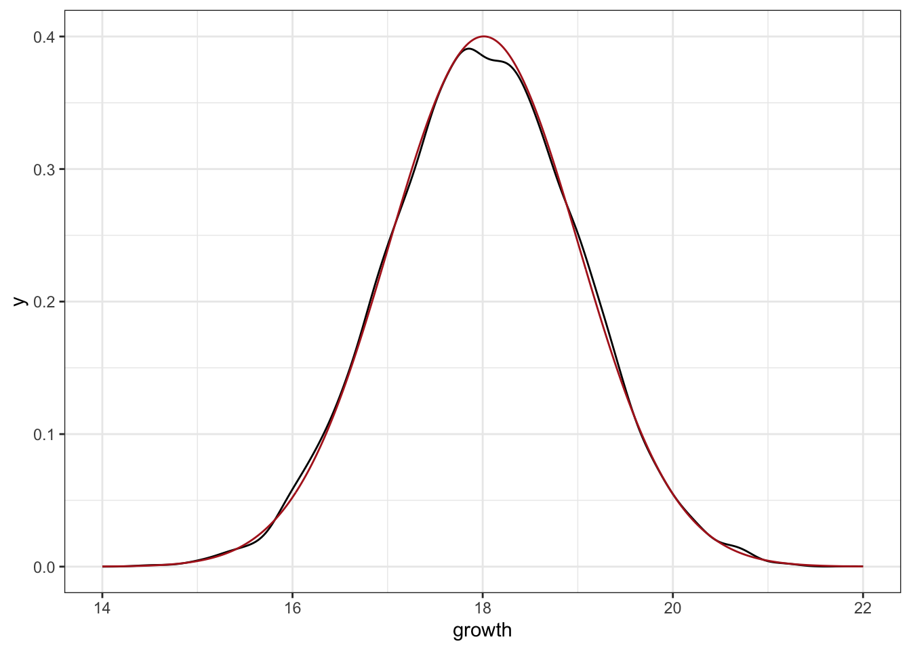
What if the effects combine by multiplying rather than adding — each gene scales growth by a factor instead of adding an amount? The factors are still independent; only the way they combine has changed. The product of many independent factors is log-normal (Figure 7.5), which is the second data story of Chapter 6.
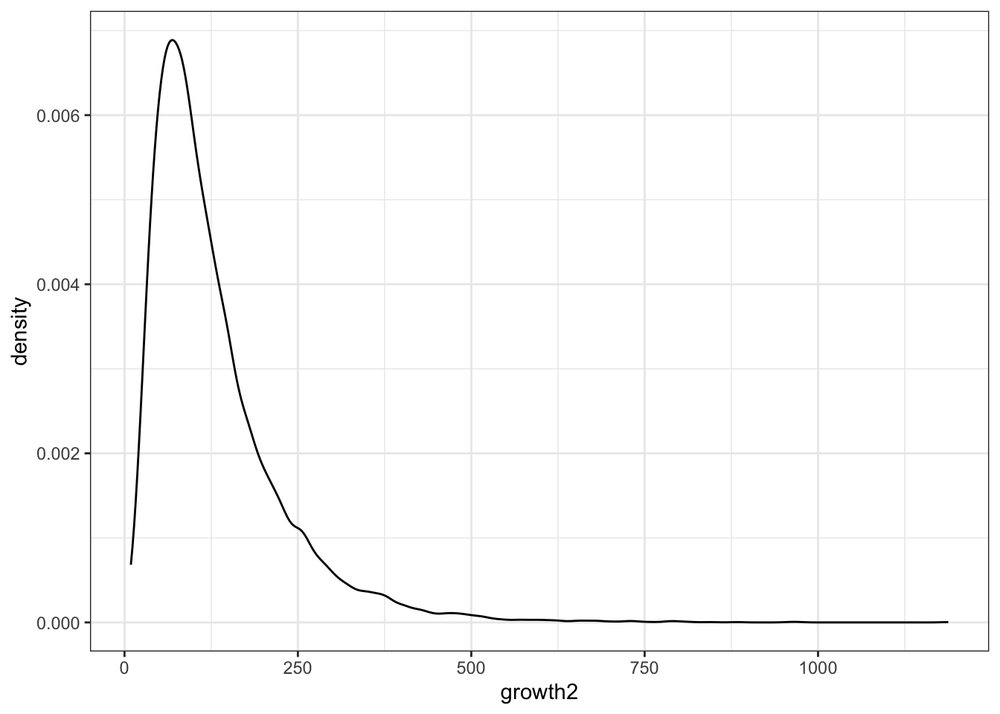
The logarithm of a product is a sum, so the logarithm of log-normal data is normally distributed (Figure 7.6): taking logs, or plotting on a log scale, turns the skewed distribution back into a bell.
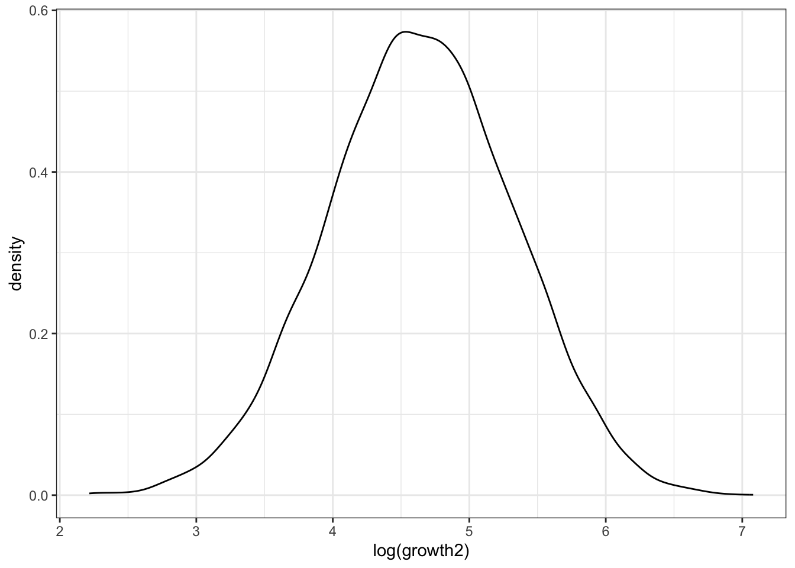
The best test of whether your data are log-normal is to take the logarithm of these data. In the log-scale these data should look normal.
If we think that our data comes from a process that generates approximately normal data (statistically speaking, we are talking about the population, not the sample), then we should model this by normal distribution. The full normal model is described by the function
\[f(x) = \frac {1}{\sigma \sqrt{2 \pi} } exp(-(\frac{(x - \mu)^2}{2 \sigma^2})\]
where x and \(\mu\) are real numbers between -Inf and Inf, and \(\sigma > 0\).
If we set mu to zero and sigma to one (this parametrisation is called the standard normal distribution), we can calculate it like this (Figure 7.7):
x <- seq(-10, 10, length.out = 1000)
mu <- 0
sigma <- 1
y <- (1/(sqrt(2*pi) * sigma)) * exp(-((x - mu)^2 /(2* sigma^2)))
ggplot(data=NULL, aes(x=x, y=y)) + geom_line() + theme_bw()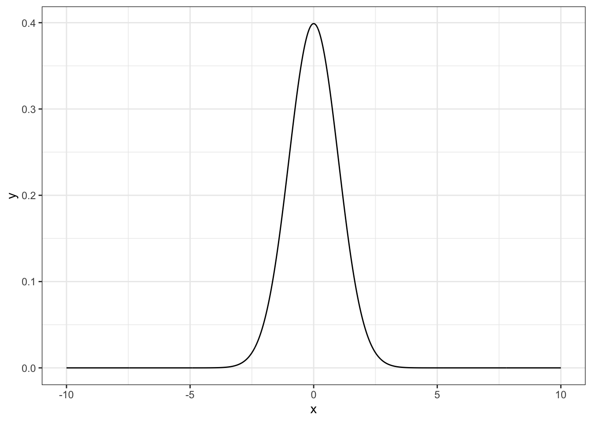
In R we have this function as dnorm()
y <- dnorm(x=x, mean=0, sd=1)
ggplot(data=NULL, aes(x=x, y=y)) + geom_line() + theme_bw()function rnorm() will draw random numbers from a normal distribution
rnorm(3, mean=100, sd=10)[1] 102.17168 111.34112 69.22435function qnorm() will show quantiles of normal distribution. For example, if p is a vector of probabilities, then
qnorm(p=c(0.05, 0.95), mean=100, sd=10)[1] 83.55146 116.44854tells us that if we draw random numbers from this distribution, then we can expect \(5\%\) of them to be smaller than 83.55 and \(95\%\) to be smaller than 116.45. Thus 83.55 is the 5th percentile (quantile) and 116.45 the 95th percentile of this distribution, and \(90\%\) of the probability lies between them.
function pnorm() gives the probability of obtaining a value \(< q\) from a normal distribution.
pnorm(q=83, mean=100, sd=10)[1] 0.04456546So the probability of obtaining a value less than 83 is about 4\(\%\).
and the probability of obtaining a value between 85 and 100 is
pnorm(q=100, mean=100, sd=10) - pnorm(q=85, mean=100, sd=10)[1] 0.4331928In continuous distributions, it is important to understand that the probability density function or PDF defines a mapping from the y values (the possible values that the data can have) to a quantity called the density of each possible value. We can see this function in action when we use dnorm() to compute, say, dnorm(1, mean = 0, sd = 1), which returns 0.242. This quantity is not the probability of observing 1 in this distribution. As probability in a continuous distribution is the area under the curve, this area will always be zero at any point value. If we want to know the probability of obtaining values between an upper and lower bound b and a, i.e., P(a<Y<b) where these are two distinct values, we must use the cumulative distribution function or CDF: in R, for the normal distribution, this is the pnorm function. For example, the probability of observing a value between +2 and -2 in a normal distribution with mean 0 and standard deviation 1 is:
pnorm(2, mean = 0, sd = 1) - pnorm(-2, mean = 0, sd = 1)[1] 0.9544997Mathematically the log-normal model (Figure 7.8) is described by this function:
\[f(x) = \frac{1}{x \beta \sqrt {2 \pi}} exp(- \frac{1}{2}(log(x/\alpha)/ \beta)^2)\] where \(x > 0\) \[E(X) = \alpha \times exp(\beta^2/2)\]
Again, here we have a model with two parameters, but the EX and SD(X) no longer equal a model parameter.
\[Var(X) = \alpha ^2 \times \exp(\beta^2) \times (\exp(\beta^2) - 1),\] and \(SD(X)\) is its square root.
x <- seq(0, 100, length.out = 1000)
y <- dlnorm(x, meanlog = log(100), sdlog = log(10))
ggplot(data=NULL, aes(x=x, y=y)) + geom_line() + theme_bw()
Note that the R function dlnorm() takes its parameters in logarithmic form.
qlnorm(p=c(0.05, 0.95), meanlog=log(100), sdlog=log(10))[1] 2.265408 4414.216471plnorm(q = qlnorm(p = c(0.05, 0.95), meanlog = log(100), sdlog = log(10)),
meanlog = log(100), sdlog = log(10)) # the quantile function inverted[1] 0.05 0.95Not all probability distributions have defined expected value and/or SD. They may have other properties that make them usable models. The first distribution below is a case in point.
The normal distribution has thin tails: values more than three standard deviations from the mean are very rare. Real data, especially small samples, produce extreme values more often than the normal allows. Student’s t distribution relaxes that assumption. It is most useful to read it not as a distribution that approaches the normal for large samples, but the other way round: the two-parameter normal is the special case of a broader family that carries one extra parameter for tail weight. In its location–scale form the Student’s t has a location \(\mu\), a scale \(\sigma\), and a degrees-of-freedom (or normality) parameter \(\nu\) that controls tail weight. Small \(\nu\) gives heavy tails, and \(\text{Normal}(\mu, \sigma)\) is recovered as the limit \(\nu \to \infty\). For finite \(\nu\) the shape is the same symmetric bell as the normal, with more probability placed far from the centre.
Two points follow. First, \(\sigma\) is the scale, not the standard deviation: for \(\nu > 2\) the standard deviation is \(\sigma\sqrt{\nu/(\nu-2)}\), which exceeds \(\sigma\) and approaches it only as \(\nu \to \infty\). Second, the figure below is drawn in the standardised form (\(\mu = 0\), \(\sigma = 1\)) used in classical testing theory; on that scale the finite-\(\nu\) curves are wider than the standard normal, and the \(\nu \to \infty\) limit is specifically the standard normal \(\text{Normal}(0, 1)\) (Figure 7.9).
xg <- seq(-5, 5, length.out = 400)
tibble(x = rep(xg, 4),
density = c(dt(xg, df = 1), dt(xg, df = 3),
dt(xg, df = 30), dnorm(xg)),
dist = rep(c("t, df=1", "t, df=3", "t, df=30", "normal"),
each = length(xg))) %>%
ggplot(aes(x, density, colour = dist, linetype = dist == "normal")) +
geom_line() +
scale_linetype_manual(values = c(`TRUE` = 2, `FALSE` = 1), guide = "none") +
theme_bw()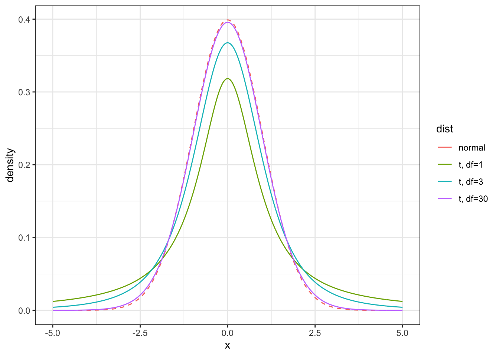
The distribution arises whenever a normal mean is standardised by an estimate of the standard deviation rather than its true value: this is why the t distribution governs the classical one- and two-sample t-tests (Appendix G). It was derived by William Gosset, a chemist at the Guinness brewery in Dublin, publishing under the pseudonym “Student” because his employer treated such work as a trade secret.3
The heavy tails have a second, modern use. Replacing a normal likelihood or prior with a t distribution makes a model robust: an outlying observation, which a normal would treat as nearly impossible and so allow to drag the fit towards itself, is accommodated by the heavier tail and exerts less leverage. Part V uses this device (brms provides it as the student family; Appendix D).
The degrees of freedom also control which moments exist — a concrete illustration of the warning that closed the previous section. For \(\nu = 1\) (the Cauchy distribution) the t distribution has no defined mean and no variance; for \(1 < \nu \le 2\) the mean is zero but the variance is infinite; only for \(\nu > 2\) are both finite. The R functions are dt, pt, qt, rt, each taking the argument df.
# probability of a value beyond +3 under heavy-tailed (df=2) vs normal
c(t_df2 = pt(3, df = 2, lower.tail = FALSE),
normal = pnorm(3, lower.tail = FALSE)) t_df2 normal
0.047732983 0.001349898 The exponential distribution models the waiting time until an event, when events arrive at random at a constant average rate — the continuous counterpart of the Poisson distribution, which counts how many such events fall in a fixed interval. Its support is the non-negative real numbers, and it has a single parameter, the rate \(\lambda > 0\) (events per unit time). Its density is
\[f(x) = \lambda\, e^{-\lambda x}, \qquad x \ge 0.\]
The mean waiting time is \(1/\lambda\) and the standard deviation is also \(1/\lambda\). The exponential is memoryless: given that no event has occurred yet, the distribution of the remaining wait is unchanged, no matter how long one has already waited. This is a strong assumption — it is why the exponential is often too rigid for real survival or failure times, and the gamma below relaxes it. Figure 7.10 shows three rates.
xg <- seq(0, 6, length.out = 300)
tibble(x = rep(xg, 3),
density = c(dexp(xg, 0.5), dexp(xg, 1), dexp(xg, 2)),
rate = rep(c("0.5", "1", "2"), each = length(xg))) %>%
ggplot(aes(x, density, colour = rate)) + geom_line() + theme_bw()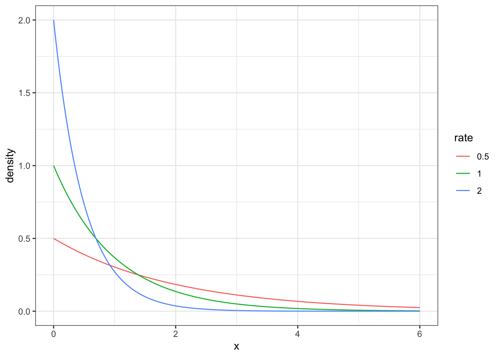
If a hospital records on average 2 admissions per hour for some condition, the probability that the next admission comes within the first 30 minutes (half an hour) is
pexp(0.5, rate = 2)[1] 0.6321206The R functions are dexp, pexp, qexp, rexp, taking the argument rate.
The gamma distribution generalises the exponential. It also lives on the non-negative reals, but has two parameters: a shape \(\alpha > 0\) and a rate \(\beta > 0\) (R also allows a scale \(= 1/\beta\)). When the shape equals 1, the gamma is the exponential with rate \(\beta\). When the shape is a positive integer \(\alpha = k\), the gamma is the distribution of the total waiting time for \(k\) successive exponential events — the sum of \(k\) independent \(\text{Exp}(\beta)\) waits. The shape thus moves the distribution from the strictly decreasing exponential (shape 1) towards an increasingly symmetric hump as it grows (Figure 7.11).
xg <- seq(0, 12, length.out = 400)
tibble(x = rep(xg, 3),
density = c(dgamma(xg, shape = 1, rate = 1),
dgamma(xg, shape = 2, rate = 1),
dgamma(xg, shape = 5, rate = 1)),
shape = rep(c("1 (exponential)", "2", "5"), each = length(xg))) %>%
ggplot(aes(x, density, colour = shape)) + geom_line() + theme_bw()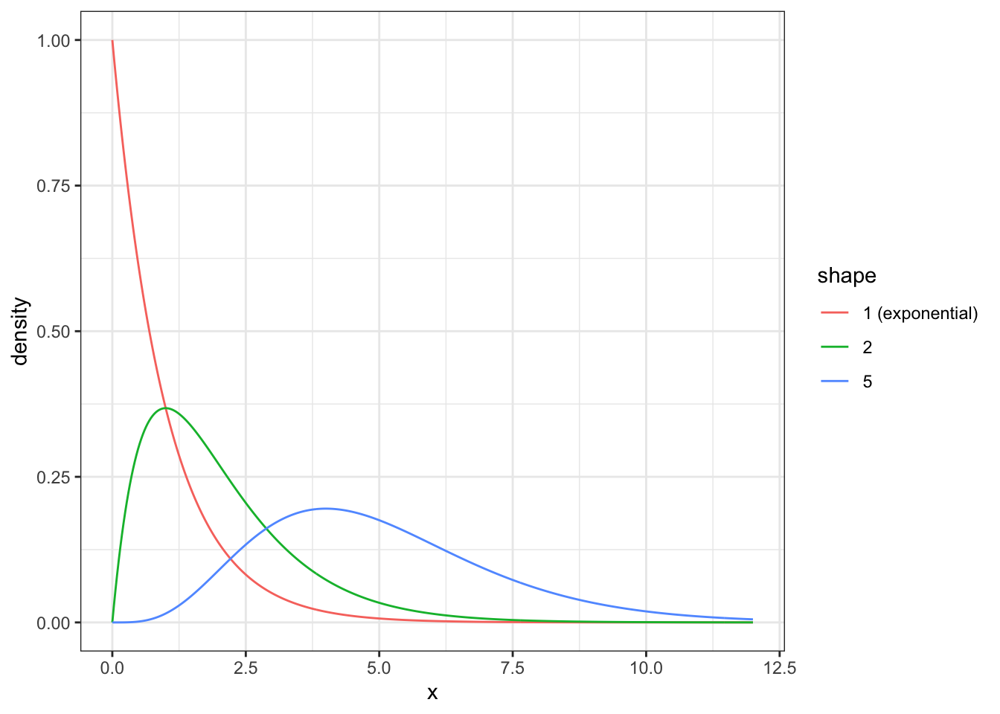
The mean is \(\alpha/\beta\) and the variance \(\alpha/\beta^2\). The gamma is the natural model for a positive continuous quantity — a concentration, a duration, a cost — and two other distributions are gammas in disguise. The chi-squared distribution of classical tests (Appendix G) is a gamma with shape \(\nu/2\) and rate \(1/2\). And the negative binomial of the Poisson section is a gamma–Poisson mixture: counts that are Poisson given a rate, with the rate itself varying from unit to unit according to a gamma distribution. The R functions are dgamma, pgamma, qgamma, rgamma.
The beta distribution lives on the unit interval \([0, 1]\), which makes it the natural distribution for a probability or proportion. It has two shape parameters, \(\alpha > 0\) and \(\beta > 0\), which can be read as counts of evidence — loosely, \(\alpha\) “successes” and \(\beta\) “failures”. Their balance sets the location and their sum sets the concentration (Figure 7.12):
xg <- seq(0, 1, length.out = 300)
tibble(x = rep(xg, 4),
density = c(dbeta(xg, 1, 1), dbeta(xg, 2, 2),
dbeta(xg, 2, 5), dbeta(xg, 0.5, 0.5)),
shape = rep(c("Beta(1,1)", "Beta(2,2)",
"Beta(2,5)", "Beta(0.5,0.5)"), each = length(xg))) %>%
ggplot(aes(x, density, colour = shape)) + geom_line() +
coord_cartesian(ylim = c(0, 3)) + theme_bw()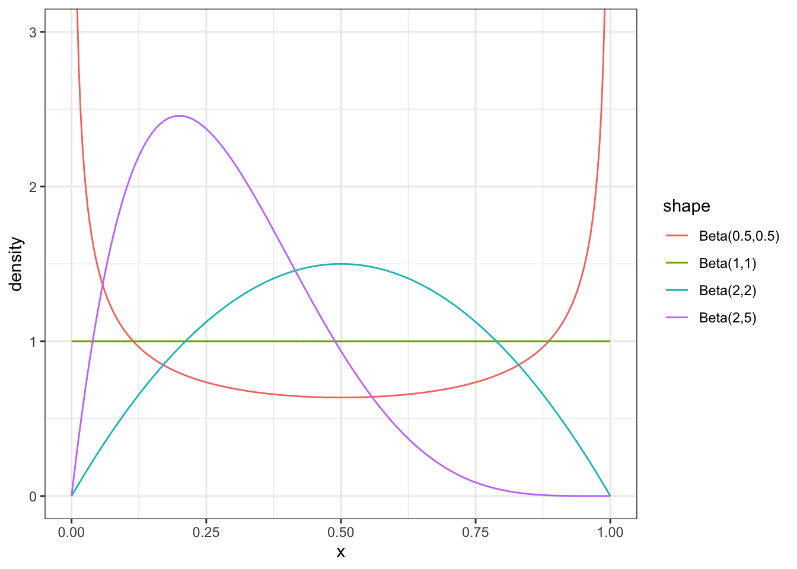
The mean is \(\alpha/(\alpha+\beta)\). \(\text{Beta}(1,1)\) is the uniform distribution — every probability between 0 and 1 equally likely. Equal shapes give a symmetric distribution centred at \(0.5\); raising both shapes concentrates it there; shapes below 1 push mass towards the two ends.
The beta distribution is the standard tool for expressing uncertainty about a binomial probability. It is the conjugate prior for the binomial: combine a \(\text{Beta}(\alpha,\beta)\) belief about a probability with binomial data of \(s\) successes and \(f\) failures, and the updated belief is exactly \(\text{Beta}(\alpha+s, \beta+f)\) — the posterior has the same form as the prior, with the evidence counts simply added on. This is the mechanism behind the beta-binomial distribution of the Poisson section, and Chapter 9 uses it as the cleanest worked example of Bayesian updating. The R functions are dbeta, pbeta, qbeta, rbeta, taking shape1 and shape2.
The distributions in this chapter are connected by a small number of operations: taking a special case (fixing a parameter), taking a limit (letting a parameter go to an extreme), summing independent draws, and mixing one distribution over another’s parameter. Tracing these links is more useful than memorising the densities, because it tells you which model to reach for when an assumption fails (Table 7.1).
| Relationship | Statement |
|---|---|
| Special case | \(\text{Exponential}(\beta) = \text{Gamma}(\text{shape}=1, \text{rate}=\beta)\) |
| Special case | \(\chi^2_\nu = \text{Gamma}(\text{shape}=\nu/2, \text{rate}=1/2)\) |
| Special case | \(\text{Uniform}(0,1) = \text{Beta}(1,1)\) |
| Special case | Cauchy $= $ Student’s \(t\) with \(\nu = 1\) |
| Sum | sum of \(k\) i.i.d. \(\text{Exp}(\beta)\) draws \(= \text{Gamma}(k, \beta)\) |
| Limit | \(\text{Binomial}(n,p) \to \text{Poisson}(\lambda)\) as \(n\to\infty\), \(np\to\lambda\) |
| Limit | \(\text{Student-}t(\nu) \to \text{Normal}\) as \(\nu\to\infty\) |
| Limit (CLT) | sum/mean of many i.i.d. draws \(\to \text{Normal}\) |
| Mixture | Poisson with a gamma-distributed rate \(= \text{Negative binomial}\) |
| Mixture | Binomial with a beta-distributed probability \(= \text{Beta-binomial}\) |
| Conjugacy | beta prior \(+\) binomial data \(\to\) beta posterior |
| Conjugacy | gamma prior \(+\) Poisson data \(\to\) gamma posterior |
| Ratio | \(Z/\sqrt{V/\nu} = \text{Student-}t(\nu)\), with \(Z\) normal, \(V \sim \chi^2_\nu\) |
Three families of links are worth naming. First, the limit links are why the normal is everywhere: the central limit theorem (the callout of the normal section) sends sums and means of almost any distribution towards the normal, and both the binomial and the Poisson approach it for large counts. Second, the mixture links build the over-dispersed count models of the Poisson section: when a simple model’s variance is too small for the data, letting its parameter vary according to a second distribution (gamma over a Poisson rate, beta over a binomial probability) widens it. Third, the conjugacy links are the ones Part II’s Bayesian machinery exploits: when prior and likelihood are a conjugate pair, updating is just arithmetic on the parameters, and Student’s t sits slightly outside this tidy structure — which is exactly what makes it useful for robustness.
Most — though not all — of the distributions above share a single mathematical form. A distribution belongs to the exponential family if its density (or mass function) can be written as
\[f(x \mid \theta) = h(x)\,\exp\!\big(\eta(\theta)\,T(x) - A(\theta)\big),\]
where \(T(x)\) is a summary of the data (a sufficient statistic), \(\eta(\theta)\) is a transformation of the parameter (the natural parameter), and \(h\) and \(A\) are fixed functions. The definition is worth recognising rather than manipulating; what matters is the membership list and what membership buys.
The normal, exponential, gamma, beta, Poisson, binomial (and Bernoulli, and the negative binomial with known dispersion) are all exponential-family distributions. Distributions in this chapter that are not: Student’s t (its degrees-of-freedom parameter cannot be put in the form above), the log-normal in its natural parametrisation, and the over-dispersed beta-binomial mixture.
Membership matters for two threads of this book. First, conjugacy is not a coincidence: every exponential-family likelihood has a conjugate prior,4 which is why the beta–binomial and gamma–Poisson pairings of the relationship table exist at all (Chapter 9). Second, the generalised linear model of Chapter 25 is built directly on this family: a GLM assumes the outcome follows an exponential-family distribution and connects its mean to a linear predictor through a link function, read off the natural parameter \(\eta(\theta)\) (the log link for the Poisson, the logit for the binomial). A single regression framework handles counts, proportions, and positive amounts alike because all of these distributions share this one form.5
is neutral between frequentist and Bayesian inference: the exponential family supplies the model, not a method of fitting it. A GLM is classically estimated by maximum likelihood. This book instead places priors on the coefficients and computes the posterior, so every fitted quantity is a posterior distribution rather than a point estimate (Chapter 25). The structure carried by the exponential family is identical under either approach; only the estimation differs.
The catalogue is in place, and the next chapter, Chapter 8, asks the question this one set aside: what the numbers in these distributions mean, and why a reasoner who grades belief consistently is forced to the calculus that produces them. The distributions then go to work. The beta and the binomial meet in Chapter 9 as the cleanest worked case of Bayesian updating; Chapter 10 fits them to data and reports posteriors; and in Part V the exponential family becomes the backbone of the generalised linear model (Chapter 25), with the Poisson as the working model for a binary outcome (Chapter 13), the gamma and log-normal for positive quantities, and Student’s t wherever a fit must survive an outlier.
Tails matter. Using pt and pnorm, compute the probability of a value beyond \(+4\) for Student’s t with \(\nu = 2\), \(\nu = 10\), and for the standard normal. By what factor does the heavy-tailed model exceed the normal? Then draw 10,000 values from each with rt/rnorm and compare the number of draws beyond \(+4\).
Exponential is gamma. Show, by overlaying their densities with dexp(x, rate = 2) and dgamma(x, shape = 1, rate = 2), that the exponential is the shape-1 gamma. Then plot the density of the sum of three independent \(\text{Exp}(2)\) waiting times by simulation (rexp + rowSums) and overlay dgamma(x, shape = 3, rate = 2).
Memorylessness. For an \(\text{Exp}(1)\) distribution, use pexp to verify that \(P(X > 3 \mid X > 1) = P(X > 2)\). Explain in one sentence why this property makes the exponential a poor model for the lifetime of a component that wears out.
Beta as updated belief. Start from a \(\text{Beta}(1,1)\) (uniform) prior for the stroke risk in untreated patients. Source R/simulate_cohort.R, generate the cohort with simulate_cohort(n = N_COHORT, seed = 2024), take the untreated patients, and update the prior to a \(\text{Beta}(1 + s,\, 1 + f)\) posterior using the observed numbers of strokes \(s\) and non-strokes \(f\). Plot prior and posterior, and compare the posterior mean \(\alpha/(\alpha+\beta)\) with the raw proportion.
Conjugacy by hand. Confirm the beta–binomial conjugacy claim numerically: on a fine grid of probabilities p, multiply a \(\text{Beta}(2,2)\) prior density by the binomial likelihood dbinom(7, 10, p), normalise, and show the result matches dbeta(p, 2 + 7, 2 + 3).
Family membership. For each of the exponential, gamma, beta and Poisson, state what kind of outcome it models and name one other distribution in the chapter it is a special case, limit, or mixture of. Then explain in two or three sentences why Student’s t is not in the exponential family and how that exclusion is connected to its use in robust models.
For symmetric distributions, the normal among them, the mean, median and mode coincide.↩︎
For the normal distribution, but not for many other distributions with location/scale parametrisation, \(\mu = EX = mean\) and \(\sigma = SD(x)\).↩︎
Student, “The Probable Error of a Mean,” Biometrika 1908;6:1-25 (DOI).↩︎
A prior is conjugate to a likelihood when the resulting posterior belongs to the same distributional family as the prior, so that observing data changes only the family’s parameters and not its form. A beta prior with a binomial likelihood yields a beta posterior; a gamma prior with a Poisson likelihood yields a gamma posterior. The practical consequence is that the posterior is obtained by arithmetic on the parameters rather than by numerical integration or simulation. Conjugacy is a convenience of the exponential family, not a requirement of Bayesian inference: the models fitted with brms in this book use non-conjugate priors and sample the posterior instead (Chapter 9).↩︎
This family-and-link structure is the generalised linear model, and it↩︎